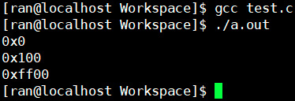

整型提升
C/C++的整型算术运算总是至少以缺省整型类型的精度来进行的
为了获得这个精度，表达式中的字符和短整型操作数在使用之前被转换为普通整型
表达式的运算要在CPU内执行，CPU内整型运算器的操作数的字节长度一般是int的字节长度，同时也是CPU的通用寄存器的长度。因此，即使两个char类型的相加，在CPU执行时也要先转换为CPU内整型操作数的标准长度。通用CPU是难以直接实现两个8比特字节直接相加运算所以，表达式中各种长度可能小于int长度的整型值，都必须先转换为int或unsigned int，然后才能送入CPU去执行运算
如果是unsigned类型的那么高位补0
如果是signed类型的那么高位补符号位
这里需要注意的是
char的长度≤short int的长度≤int的长度
这意味着short int与int的长度相等的可能。这种情形下，unsigned short就无法提升为int表示，只能提升为unsigned int（一般情况下short占2个字节，某些时候short会占4个字节）
算术转换
常用的算术转换是隐式地把值强制转换为相同的类型。编译器首先执行整数提升，如果操作数类型不同，则它们会被转换为下列层次中出现的最高层次的类型：
long double
double
float
unsigned long long
long long
unsigned long
long
unsigned int
int
比如int+unsigned int，int类型的操作数就要先提升到unsigned int然后进行计算
如果某个操作数的类型在上面这个列表中排名较低，那么首先要转换为另外一个操作数的类型后执行运算
警告： 但是算术转换要合理，要不然会有一些潜在的问题：
1 | float f = 3.14; |
这里发生的隐式类型转换是这样的：在内存上创建一个const int类型的只读临时变量，其数值是3（将小数点后面舍去）然后将其赋值给num，所以会有精度丢失
测试
1 | char c; |

第一次是这样的过程：
c = 128;
uc = 128;
us = c + uc;
由于c是char类型，uc是unsigned char类型他们相加就会提升到int类型：
1111 1111 1111 1111 1111 1111 1000 0000 c（char类型提示规则：高位补符号位）
0000 0000 0000 0000 0000 0000 1000 0000 uc（unsigned char提升规则：高位补0）
0000 0000 0000 0000 0000 0000 0000 0000 这个int类型的计算结果放在寄存器中
然后将寄存器中的值放入us中，由于us是unsigned short类型所以舍掉前两个字节，就成了0x0
第二次是这样的过程：
c = 128;
uc = 128;
us = (unsigned char)c + uc;
同样c是char类型，uc是unsigned char类型，将c强转成unsigned类型，他们相加会提升到int类型：
0000 0000 0000 0000 0000 0000 1000 0000 c（unsigned char提升规则：高位补0）
0000 0000 0000 0000 0000 0000 1000 0000 uc（unsigned char提升规则：高位补0）
0000 0000 0000 0000 0000 0001 0000 0000 这个int类型的计算结果放在寄存器中
然后将寄存器中的值放入us中，由于us是unsigned short类型所以舍掉前两个字节，就成了0x10
第三次是这样的过程：
c = 128;
uc = 128;
us = c + (char)uc;
同样c是char类型，uc是unsigned char类型，将c强转成unsigned char类型，他们相加会提升到int类型：
1111 1111 1111 1111 1111 1111 1000 0000 c（char类型提示规则：高位补符号位）
1111 1111 1111 1111 1111 1111 1000 0000 uc（char类型提示规则：高位补符号位）
1111 1111 1111 1111 1111 1111 0000 0000 这个int类型的计算结果放在寄存器中
然后将寄存器中的值放入us中，由于us是unsigned short类型所以舍掉前两个字节，就成了0xff00